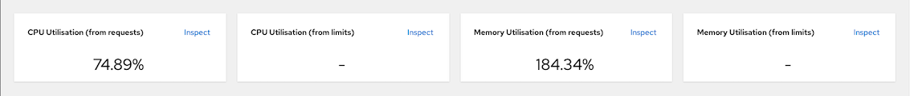
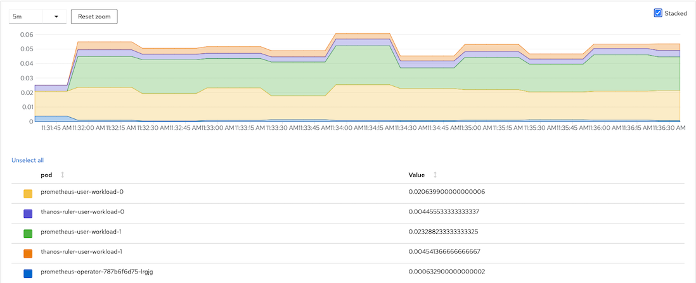
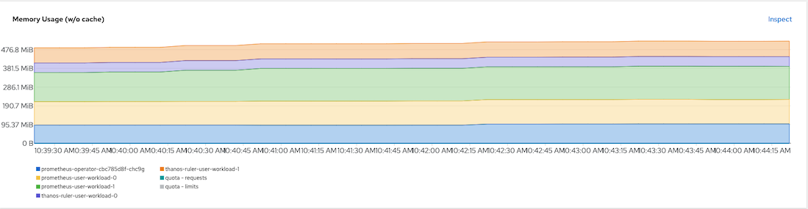
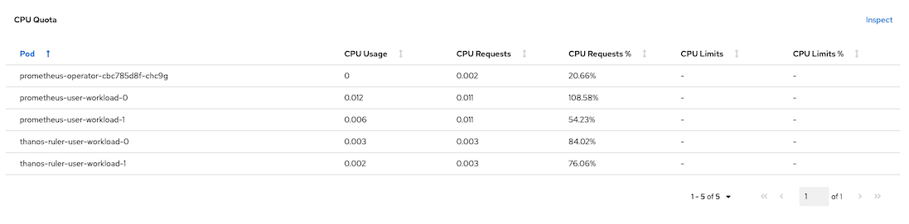
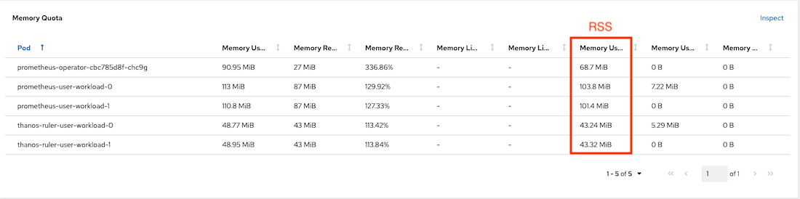

User Workload Metrics
Prerequisites
Setup User Workload Monitoring
Remark: You may need to change storageClassName based on your cluster configuration
oc apply -f manifests/cluster-monitoring-config.yaml sleep 10 oc -n openshift-user-workload-monitoring wait --for condition=ready \ --timeout=180s pod -l app.kubernetes.io/name=prometheus oc -n openshift-user-workload-monitoring wait --for condition=ready \ --timeout=180s pod -l app.kubernetes.io/name=thanos-rulerOutput
configmap/cluster-monitoring-config created pod/prometheus-user-workload-0 condition met pod/prometheus-user-workload-1 condition met pod/thanos-ruler-user-workload-0 condition met pod/thanos-ruler-user-workload-1 condition metVerify monitoring stack
oc get pod -n openshift-user-workload-monitoringSample output
NAME READY STATUS RESTARTS AGE prometheus-operator-5fc7d894dc-9nlhc 2/2 Running 0 9m3s prometheus-user-workload-0 4/4 Running 1 5m45s prometheus-user-workload-1 4/4 Running 1 6m1s thanos-ruler-user-workload-0 3/3 Running 5 8m55s thanos-ruler-user-workload-1 3/3 Running 0 11sCPU and Memory used by User Workload Monitoring
Overall resouces consumed by user workload monitoring

CPU Usage

Memory Usage

CPU Quota

Memory Quota

Service Monitoring
Deploy application with custom metrics
oc create -f manifests/frontend-v1-and-backend-v1-JVM.yaml -n project1
Call frontend app with curl
curl https://$(oc get route frontend -o jsonpath='{.spec.host}' -n project1)Output
Frontend version: v1 => [Backend: http://backend:8080, Response: 200, Body: Backend version:v1, Response:200, Host:backend-v1-5587465b8d-9kvsc, Status:200, Message: Hello, World]Check for backend's metrics
Check JVM heap size
oc exec -n project1 $(oc get pods -l app=backend \ --no-headers -o custom-columns='Name:.metadata.name' \ -n project1 | head -n 1 ) \ -- curl -s http://localhost:8080/q/metrics | grep heapSample output
jvm_memory_max_bytes{area="nonheap",id="CodeHeap 'profiled nmethods'"} 1.22912768E8 jvm_memory_max_bytes{area="heap",id="PS Old Gen"} 1.048576E8 jvm_memory_max_bytes{area="heap",id="PS Survivor Space"} 1048576.0 jvm_memory_max_bytes{area="heap",id="PS Eden Space"} 4.718592E7 jvm_memory_max_bytes{area="nonheap",id="Metaspace"} -1.0 jvm_memory_max_bytes{area="nonheap",id="CodeHeap 'non-nmethods'"} 5828608.0 jvm_memory_max_bytes{area="nonheap",id="Compressed Class Space"} 1.073741824E9 jvm_memory_max_bytes{area="nonheap",id="CodeHeap 'non-profiled nmethods'"} 1.22916864E8 ...Check for backend application related metrics
curl https://$(oc get route frontend -n project1 -o jsonpath='{.spec.host}') oc exec -n project1 $(oc get pods -l app=backend \ --no-headers -o custom-columns='Name:.metadata.name' \ -n project1 | head -n 1 ) \ -- curl -s http://localhost:8080/q/metrics | grep http_server_requests_seconds
Check that http_server_requests_seconds_count with method GET and root URI value is 1 with return status 200
# HELP http_server_requests_seconds # TYPE http_server_requests_seconds summary http_server_requests_seconds_count{method="GET",outcome="SUCCESS",status="200",uri="root",} 1.0 http_server_requests_seconds_sum{method="GET",outcome="SUCCESS",status="200",uri="root",} 2.64251063 # HELP http_server_requests_seconds_max # TYPE http_server_requests_seconds_max gauge http_server_requests_seconds_max{method="GET",outcome="SUCCESS",status="200",uri="root",} 2.64251063
Create Service Monitoring to monitor backend service
apiVersion: monitoring.coreos.com/v1 kind: ServiceMonitor metadata: name: backend-monitor spec: endpoints: - interval: 30s port: http path: /q/metrics # Get metrics from URI /q/metrics scheme: http selector: matchLabels: app: backend # select only label app = backendCreate service monitor
oc apply -f manifests/backend-service-monitor.yaml -n project1Remark: Role monitor-edit is required for create ServiceMonitor and PodMonitor resources. Following example is granting role montior-edit to user1 for project1
oc adm policy add-role-to-user monitoring-edit user1 -n project1Developer Console monitoring metrics
Select application metrics

Application metrics
Scale backend-v1 and frontend-v1 to 5 pod and run load test tool
oc scale deployment backend-v1 --replicas=5 -n project1 oc scale deployment frontend-v1 --replicas=5 -n project1- Use K6
oc run load-test-frontend -n project1 \ -i --image=loadimpact/k6 \ --rm=true --restart=Never -- run -< manifests/load-test-k6.js \ -e URL=http://frontend:8080 \ -e THREADS=10 \ -e RAMPUP=30s \ -e DURATION=3m \ -e RAMPDOWN=30s \ -e K6_NO_CONNECTION_REUSE=true- Use Siege
oc create -f manifests/tools.yaml -n project1 TOOL=$(oc get po -n project1 -l app=network-tools --no-headers -o custom-columns='Name:.metadata.name')Run siege command
oc exec -n project1 $TOOL -- siege -c 20 -t 4m http://frontend:8080PromQL for query request/sec for GET method to root URI of backend service
rate(http_server_requests_seconds_count{method="GET",uri="root"}[1m])Sample stacked graph

Custom Grafana Dashboard
Use Grafana Operator by Red Hat to deploy Grafana and configure datasource to Thanos Querier
Remark: Grafana Operator is Community Edition - not supported by Red Hat
Create project
oc new-project application-monitor --display-name="App Dashboard" --description="Grafana Dashboard for Application Monitoring"Install Grafana Operator to project application-monitor
- Install Grafana Operator from OperatorHub

- Install to application-monitor project

Create Grafana instance
oc create -f manifests/grafana.yaml -n application-monitor watch -d oc get pods -n application-monitorSample Output
NAME READY STATUS RESTARTS AGE grafana-deployment-cd4764497-jcwtx 1/1 Running 0 52s grafana-operator-7d585d8fb4-nks8s 1/1 Running 0 4m55sAdd cluster role
cluster-monitoring-viewto Grafana ServiceAccountoc adm policy add-cluster-role-to-user cluster-monitoring-view \ -z grafana-serviceaccount -n application-monitorCreate Grafana DataSource with serviceaccount grafana-serviceaccount's token and connect to thanos-querier
- For oc version 4.10
TOKEN=$(oc serviceaccounts get-token grafana-serviceaccount -n application-monitor) cat manifests/grafana-datasource.yaml|sed 's/Bearer .*/Bearer '"$TOKEN""'"'/'|oc apply -n application-monitor -f -- For oc version 4.11 and higher
TOKEN=$(oc create token grafana-serviceaccount -n application-monitor) cat manifests/grafana-datasource.yaml|sed 's/Bearer .*/Bearer '"$TOKEN""'"'/'|oc apply -n application-monitor -f -Create Grafana Dashboard
oc apply -f manifests/grafana-dashboard.yaml -n application-monitorLogin to Grafana Dashboard with following URL
echo "Grafana URL => https://$(oc get route grafana-route -o jsonpath='{.spec.host}' -n application-monitor)"or use link provided by Developer Console

Login with user
adminand passwordopenshiftGenerate workload
bash script to loop request to frontend application.
FRONTEND_URL=https://$(oc get route frontend -n project1 -o jsonpath='{.spec.host}') while [ 1 ]; do curl $FRONTEND_URL printf "\n" sleep .2 donek6 load test tool with 10 threads for 5 minutes
oc run load-test-frontend -n project1 \ -i --image=loadimpact/k6 \ --rm=true --restart=Never -- run -< manifests/load-test-k6.js \ -e URL=http://frontend:8080 \ -e THREADS=15 \ -e RAMPUP=30s \ -e DURATION=5m \ -e RAMPDOWN=30s
Grafana Dashboard

Custom Alert
- Check
PrometheusRulebackend-app-alert
backend-app-alert is consists with 2 following alerts:
ConcurrentBackend severity warning when total concurrent reqeusts is greater than 40 requests/sec
HighLatency servierity critical when percentile 90th of response time is greater than 5 sec
Create backend-app-alert
oc apply -f manifests/backend-custom-alert.yamlRemark: Role
monitoring-rules-viewis required for viewPrometheusRuleresource and rolemonitoring-rules-editis required to create, modify, and deletingPrometheusRuleFollowing example is granting role monitoring-rules-view and monitoring-rules-edit to user1 for project1
oc adm policy add-role-to-user monitoring-rules-view user1 -n project1 oc adm policy add-role-to-user monitoring-rules-edit user1 -n project1
Test
ConcurrentBackendalert with 25 concurrent requestsoc run load-test-frontend -n project1 \ -i --image=loadimpact/k6 \ --rm=true --restart=Never -- run -< manifests/load-test-k6.js \ -e URL=http://frontend:8080 \ -e THREADS=15 \ -e RAMPUP=30s \ -e DURATION=5m \ -e RAMPDOWN=30sCheck for alert in Developer Console by select Menu
Monitoringthen selectAlerts
Check for alert in Developer Console

Console overview status